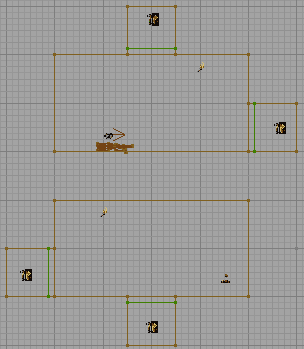

WarpZoneInfo
A Warp Zone is a zone that behaves in a very similar manner to a teleporter. The big difference between the two is that you can see through a warp zone to the other side. This enables sections of a level to be seamlessly joined together even though they are separated in space (or disjoint). Warp Zones need to be placed with care for a number of reasons:
- Hit scan weapons (the minigun, the sniper rifle) will not fire through a Warp Zone so avoid using them in long corridors. There's nothing worse than shooting at someone the other end of the corridor when you bullets simply vanish mid-corridor.
- They can make your level layout very confusing as you are not bound by the normal rules of space.
- In UT2003/UT2004 avoid placing Warp Zones such that the player could see through more than one. You risk some strange hall of mirrors type effects and your framerate will plummet. This can be bent in UT99, as long as the warpzone "sees" itself, IE the warpzones are recursive.
- Warp Zones must be at least 72 units deep if you want players to be able to travel through them, but 128 units is reccomended. If you only want to be able to see "through" the warp zone and travel through it is not requires, then you can make it as shallow as you want. When pathing the zone place the final PathNode as deep into the Warp Zone as you can - this tends to prevent bots getting stuck in the Warp Zone itself.
- Do not place any semi-solids or actors within your warp zone – it should be completely bare apart from the WarpZoneInfo object itself. Strange things happen when you do from relatively benign HOM effects through to map crashes.
- Both Warp Zones should be the same shape with the same textures, otherwise the transition will not be very seamless when you walk through the warp zone.
- Warp zones will almost always cause a "stutter" or small graphics glitch when you go through the warp. This is only heavily noticable if the traveling player happens to be looking sideways while navigating the zone.
The Warp Zones are tied together by matching the OtherSideURL and the ThisTag properties of the Warp Zone. UT's DM-Fractal uses a Warp Zone in the pit that opens when the lower switches are hit.
The diagram below shows a small example level that contains four Warp Zones (or two pairs). One pair of Warp Zones link to each other horizontally, and the other pair of Warp Zones link to each other vertically, from bottom to top.
 This is the front view of a level with 4 Warp Zones on it. And yes it is possible to shoot yourself in the back with the rocket launcher in the level, or at least it would be if the rocket actors spawned on firing actually did collision detection with the actor which spawned them. |
Properties
- bNoTeleFrag
- Set this to true if you want people travelling through the warp zone to telefrag each other. Since this rather spoils the effect of the Warp Zone it's best left to false.
- OtherSideURL
- This property determines the destination Warp Zone. It should contain the same value as the target Warp Zones ThisTag property.
- ThisTag
- This property is the ID of the Warp Zone. All Warp Zones linking to this Warp Zone will have their OtherSideURL property set to the value of this property.
- Destinations
- A set of up to 8 destination tags. When the WarpZone is triggered it will switch the warpzone view on the fly. The order they switch through is bottom to top in the list, ie 7-0. Setting the warpzone's own tag as one of the destination warpzones will in effect turn off the warpzone too.
Usage
Portal Orientation
Warp zones will change the orientation of the player, but not necessarily in the way you expect. The warp zone rotates the entire coordinate system. In short: if the player enters the departure warp zone looking at the front side of the surface, they must leave the arrival warp zone with the rear side of the surface behind them. Or to put it another way: imagine the map being ripped apart, with the two zone portal surfaces being brought to coincide with each other – they should be facing the same way. Now, with portals where the player falls into the floor and then drops from the ceiling, or walks East in to the warp zone and comes out still walking East, this is a no-brainer: just add the two portals one after the other, without rotating the sheet red builder brush. In other situations, the mapper is faced with some problems in determining which way to orient the sheets:
- the surfaces are two-sided
- they're only visible if the camera is in the world volume and realtime preview is off
- you can't tell which way a surface is facing anyway
Trial and error is one option. Another is to use a texture which displays fonts. Editor.Bad is good, as it's already loaded. For a warp zone pair, you need to make sure that when you look at each portal from the main map area, one reads correctly and the other is mirrored.
Skybox
Warpzones and skyboxes don't mix, it seems. If both a warp portal and a surface displaying the skybox are visible, the engine can have problems drawing polys correctly.
The technicalities are this: if a poly P1 is visible through the warp portal Pw and overlaps a Fake Backdrop poly P2, then portions of P1 will be drawn within Pw and ALSO within P2.
Note on Warpzone Destinations
If you leave the OtherSideURL blank and only have entries in the Destinations, the warpzone will start out deactivated, ie it's just a normal closet style room you can walk in and out of as you would any normal room.
Once you trigger the warpzone however, the first destination view appears and you can then walk into and out of that view. Press the trigger again and another view replaces that one.
If you set one of the destinations to point to itself, ie. the warpzone's tag is me and one of the Destinations is set to me, then when this destination is triggered on, the warpzone is deactivated, turning it into a normal room again.
See the demo map here:
http://www.doogle.co.uk/private/warpzonechanger.zip (UT only)
SuperApe: I'm just not able to toggle it as this suggests. Do Destinations work in 2k3/4? Btw, according to the code, the Destination order is *not* reversed. Although I haven't been able to test that due to the stumbling block I just mentioned. (Wait a minute...)
Warp Zone Spanning Levels
In theory, you can specify another level's URL as the destination/OtherSideURL of the Warp Zone. I haven't had any success with this though.
Warp Zones in UT2003 and Later
Warp Zones still work in UT2003 and later engine versions, but not as well, apparently due to incompatability with some of the newer 16-bit graphics features. You can no longer see beyond one or two warpzones (this can be a little tempremental at angles or when near to the zone boundary), and the texture used for the special plane must be transparent – this means that it doesn't get used as a terminator when the engine gives up recursing (you get a nice HOM instead). Karma actors also completely ignore warp zones.
Oddly, AI interaction with them has improved, and bots can now path between warp zones (they treat the WarpZoneInfo as a node).
Discussion
Legal: So, this means the UT2004 WarpZone is broken? Or is this written pre-2k4? Also, if the 2k4 version is working, can you shoot through it? With any weapon, or are the hit-scan still incapable of firing through them? Does anyone know this, or should I spend some time checking it up? Any answers close to sane will be well-recieved.
Legal: Never mind, I found a proper explanation from Rachel below, good it's there. This Wiki info is partially incorrect compared to Rachel's info, but as I don't know just everything yet I'll leave it for later.
See also [Rachel's tutorial].
Tarquin: Yeah, Rachel doesn't play wiki
Enos: They work in 2k4, just not nearly as well as they did in UT99. I had a map in UT99 that used 6 corridors in a cross-hatch with warpzones on each end. It was a madhouse of a map, i attempted to recreate it for 2k4, but the view goes HOM very very fast (About 2 repetitions in) compared to UT99 that rended probably 6 or 7 repetitions deep.
RenegadeWeapon: The portals for the WarpZones don't necessarily have to be the same size. It is possible to create a sort of surveillance camera; by using one warpzone as the camera and the other as a screen. An ICH should ideally be placed in front of one warpzone to prevent players from jumping/firing through the setup, or you risk coming out through the walls adjacent to your destination and weird stuff like that.
Foxpaw: Hmm, I'd be interested to see if the UseStencil thing in the quote from Steve Polge is true. I tried making warp zones in UT2003 to try to answer some of the questions people were having but they did not seem to draw, regardless of the lack of a skybox. The UseStencil thing may be key, however.
LionsPhil: There appear to be another few gotchas with WarpZones - at least in UT2003 - that aren't covered here or in that excellent tutorial: splash damage does not traverse across WarpZones, so you can survive a Redeemer blast that's visually only a few metres away; trails from flack and translocators will zap through the wall and back as they cross the warpzone (I think it's following a direct route to where the other zone is located in the world, so cunning placement of your various pieces may reduce the effect of that); weapon impact effects do not cross warpzones but are simply truncated (probably applies to projectors as a whole (?)); static meshes will only render the parts of the mesh that are in your current zone if their origin is in that zone, else they render completely; zone fog will only apply to the zone that the player is in, and all other zones will appear fog-free even if beyond the fog's 'end' distance.
That said, if bClearToFogColor is true, it at least masks the HOM of recursive warpzones, like a poor man's version of the the way the warpzone texture worked in UT99.
juiblex: The link to rachels tutorial no longer works, the new location is [rachels tutorial].
Draconx: Warp Zones can be put to interesting use if you angle the zoneportal, it can allow for some interesting map concepts, such as the centrifuge of a space station where players run along the outside edge, or playing on the outside of a sphere. If only hitscan weapons fired through them...
Foxpaw: Err, juiblex, you said that the old link didn't work, then posted an identical link as the "new" one. 
It might be possible to modify hitscan weapons to work through zone portals. Since Trace can return the material that it hits, you could check the material and if it is a certain predefined "warpzone" material that you use for all of the warpzones, you could use this as an indication that it should seek out the warpzoneinfo, find it's counterpart, and maybe you could go from there. That sounds like it would work. You would, unfortunately, have to replace all of the weapons with hitscan firemodes with "fixed" ones.
I like the sound of fighting on the inside of a centrifuge-like object. Seeing people off in the distance that appeared to be fighting on the walls or fighting "upside down" "above" you would be very neat. (Though granted I think it would be coolest with something spinning fast in the center, so you wouldn't really be able to see the other side.)
Draconx: Yeah its cool, but remember that you can only see a small depth of warpzones, thus if you make it so that you can see the side directly opposite, there must only be x warpzones between you and that other side (either direction - i believe you can do a big octagon)
LionsPhil: Vehicles appear to ignore warpzones completely, both with rendering and physics. Vehicles will not pass through warpzones, colliding with the actual physical room instead. If you rotate the camera, you can see inside the 'overlapped' section. The rendering of them is terrible: vehicles will be 'cut off' if they're in your zone and jutting out; or just look like a warpzone-gone-wrong from outside (their seems to be some kind of crazy perspective mismatch). So ONS maps on minature planets are out, alas.
Foxpaw: Karma physics are integrated kind of iffy with the rest of the engine. Karma handles its own movement - this is probrably why Karma objects won't "move" through warpzones. I'd test it with other Karma objects, and a non-Karma vehicle (if there is any, the space fighters might be) to see what results that caused.
Kamek: I can attest to the fact that at least Karma ragdolls don't go through WarpZones. This is probably a good thing, otherwise ragdolls would fall forever on my Abstract map and the place would become littered quickly 
McNutcase: In UT99 at least, it's important to remember that your Zone Portals not only have polarity, they have a definite direction as well. It is perfectly possible to join a ceiling to a floor in a section of a corridor using this, allowing you to make fun corridors where gravity apparently reverses for a long section in the middle. This effect is also of great use in the faking of four-dimensional folding when building a true hypercube, as it allows for the numerous co-ordinate flips that end up with a player's brain dribbling from his ears.
When building ringworlds, I know from experience that seven segments is the practical limit, and seven segments (assuming a central spine) is actually enough to run into graphical oddities, invisible brushes turning visible, and the like. Best to stick to six, although this has some naturally deleritous effects on the believability of your ringworlds. Frankly, for ringworlds, the Unreal engine just isn't strong enough. You'd be better off with the Serious engine for that sort of jiggery-pokery.
As for Karma ragdolls, even if the player that previously inhabited them doesn't respawn, they swiftly fall victim to the Great Garbage Collector and de-rez into the weird green effect.
LionsPhil: Here are some quick tips on using WarpZones without uglyness (so that you can break player's brains subtly) – maybe move up into content if people are happy with them?:
- If you can, duplicate a section of a warpzone's target the other side of the zone plane. This will help make the lighting transitions across warpzones more accurate, and means that Karma ragdolls in UT2kx will fall somewhere that looks roughly correct, rather than a little box with incorrectly textured walls.
- Use twists. While transforms on the zone plane can lead to brokenness (vertex editing to create shear, for example, leads to a nice HOM around the edge), simple ones are fine. If you rotate your warpzones, you can make an infinite length where the two distant ends can't see eachother, and thus won't cause a HOM.
- If you can't do that, and are using UT2kx, try setting up some very slight fog, with a colour that matches the most dominant one in your textures, and set bClearToFogColour to true. It'll hide the HOM.
- Be subtle with changes in vertical angle. The player's view (and aiming) angle won't stay aligned to the floor as they travel through warpzones twisted in such a manner, so you can easily find yourself suddenly staring at the floor or the ceiling (this is also quite ugly to spectate). A ringworld would require the player to continually push their aim upward as they travelled.
- Use projectile (not trace) weapons, and provide lots of ammo to stop players falling back on the trace-based default assault rifle/Enforcer. Rocket launchers, biorifles, the UT ripper, and redeemers (yes, you can steer them through WZs) are all OK. The flak cannon works, but the UT2kx version leaves trails which will take a straight line in world-relative terms, showing up your warpzones. The translocator does the same.
- Align your zones. If you're attaching two 'islands' of space via warpzones alone, line the warpzones up as best you can between the two. This helps to reduce quirks, especially the flak trails.
- Keep warpzones as out of the way as possible. No matter what you do, they'll still show some glitches, prevent splash damage, really mess with the free-roaming spectator camera, and players will spawn with trace-based weapons (esp. in Instagib!). If you have a choice, put warpzones across sections of passage where players are least likely to be fighting with direct fire – for example, corners, or drops.
- Check your bot paths. WarpZoneInfos in UT2kx seem to act like PathNodes, with purple connecting lines across zones. If linked to the rest of the path network, bots deal with them well – I've even seen Godlike bots fire through warpzones correctly.
A tiny 1-on-1 UT2003/4 DM map demonstrating some of these principles is [here].
Tarquin: Just for reference.... which ones are the [hitscan weapon]?s?
MythOpus: I believe it's anything that uses real 'traces'. So, weapons like the assault rifle and I think even the shock rifle. Everything based off of the InstantHit weapon fire type?
BobFungus: I wonder if you could embed a mutator in a map with warpzones that changes hitscan weapons so that they don't hit instantly and instead have a ridiculous projectile velocity. It seems possible to me, but a very high velocity might end up causing problems. I'm no coder, but if anyone has the time could you get back to me on this?
McNutcase: For reference, hitscan weapons in UT99 (canon only, expansions get WAY too complex to keep track of): Enforcer, shock rifle primary, pulse gun secondary, minigun, sniper rifle. Hitscan weapons in 2k4 (the list for 2k3 can be achieved by removing the ones that aren't in it): assault rifle bullets, shock rifle primary, link gun secondary, minigun, lightning gun, sniper rifle. Other weapons' projectiles may behave oddly, or at best look odd, when passing through WarpZones (the 2kx Redeemer missile travelling backwards is an awe-inspiring sight), particularly if the projectile is affected by gravity (and you're the type, like me, to do Odd Things with gravity conservation across WarpZones)